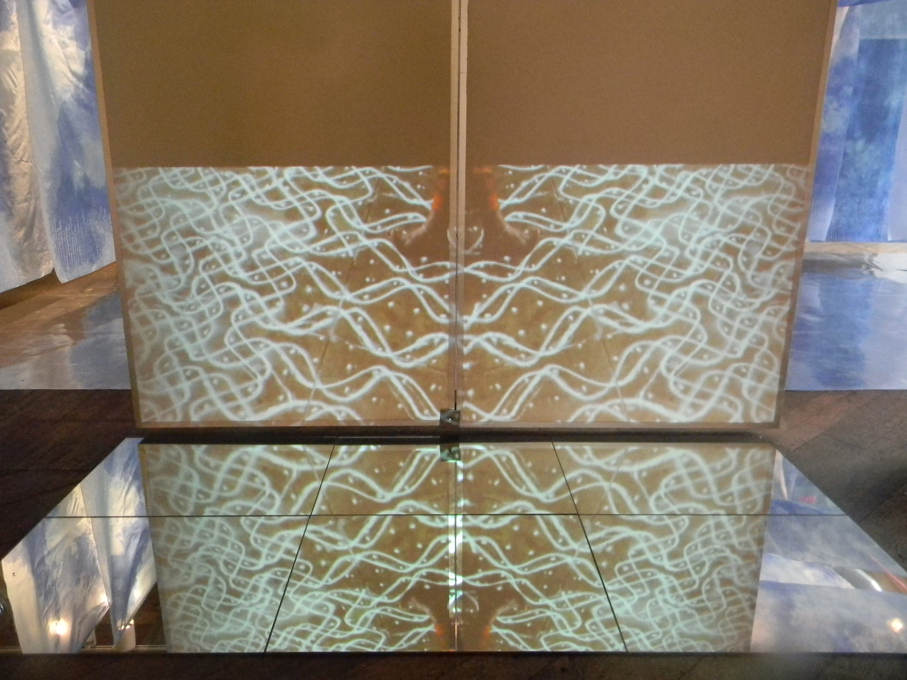
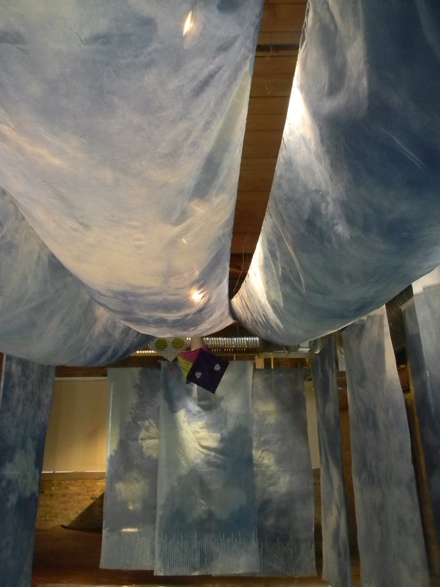
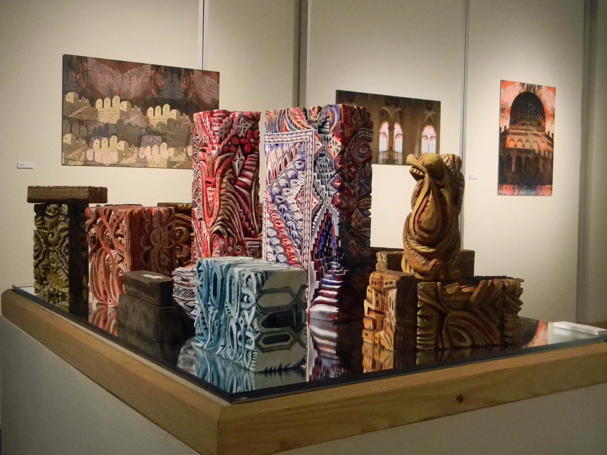
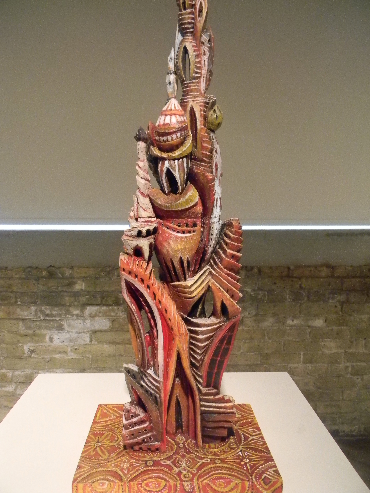
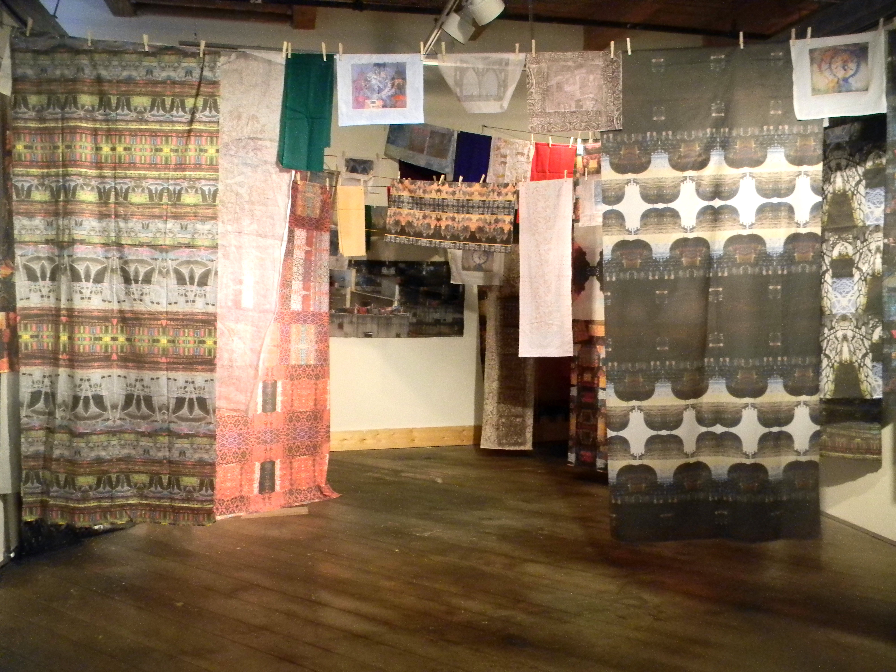

Transitions in Perspective: Myth and Mirror
Redline’s show “Transitions in Perspective: Myth and Mirror” explores the experiences of resident artist mentors Nirmal Raja and Dara Larson as they embarked on an artistic and cultural exchange in India in January 2013. The
show explores the conversation between Raja, who came to America from India
20 years ago and Dara Larson who was a first time traveler.
The show is a culmination of how they viewed the same place, while having a larger dialogue about perspective, and how we see things through our own lenses and imaginations. In the grandeur scheme of things, how we see the world is ultimately filtered through our own experiences.
The show includes works from the two artists in installation, video, sculpture, print, and interactive pieces that capture the color, culture and mythology of their expedition.The two shared exchanges through emailed letters every night, where Larson was able to express her insights, questions and inspirations to Raja, who responded. The letters have been compiled into a book that is also a part of the exhibit.
In one letter Raja commented on how well Larson was fairing considering the culture shock. “India is a sensory overload, an onslaught of color, sound, taste, and smell,” Raja wrote to Larson. “The cloth and pattern of fabrics and the graceful movements of women in sari consume me,” Larson wrote Raja. “Dedicated constructions of the temples will play a big role in my thinking,” she later wrote.
And they did. Larson’s intricate sculptural carvings modeled after the temples and fabric printmaking tools posed as art pieces, are interactive pieces that onlookers can pick up and rearrange, another metaphor for perspective. Larson’s inspirations were carved into her experience and thus into her art.
Her piece “Lines of Communication,” which was a reimagining of the many clotheslines that flow along the rooftops of a many Indian homes. This was something that Raja only associated with the process of air drying clothes in the hot Indian sun; however, for Larson, it was a visual stimulus. She made her own fabric from her photo prints of the things she saw and hung them on a line in the gallery like you would see on any given day in India. Raja even comments that she would love to wear some of the fabric pieces that Larson created to be on display, literally wearing her culture in a different fashion.
Raja’s work explores her connection to her home, and the embracement and rejections of certain works, rituals, and myths of her own culture. This is especially apparent in her piece “The never-ending line,” which explores Indian traditions and rituals captured in looped video.
“The never-ending line” features a woman making a kolam, which is a ritual that women do every morning in front of their homes with white rice flour to welcome guests and good fortune. The kolams are intricate visual designs and patterns consisting of connecting the dots. Raja remembers making these with her grandmother when she was younger and the frustration that she felt when she made a mistake. Kolams would often dissipate by mid-day from wind or foot traffic, which sheds light on one of Raja’s larger themes surrounding temperance and groundlessness which is derived from her many travels and this feeling of lacking a “ground base.”
The most striking piece would have to be “Cloud Palace,” which is breathtaking and ethereal. Guests are encouraged to take their shoes off and take in the cloud palace in its entirety. Raja explains the significance of clouds in India, with their cooling essence from the hot heat, and the connection to a fourth century love poem entitled “Meghdoot” (cloud messenger), written for the poet’s wife who he was separated from and sending his longing messages through the clouds. Raja compares clouds to inkblot tests and its relation to perspective and interpretation.
Raja usually makes the trek to India every year to visit her family, but took this particular trip with Larson as an opportunity to explore her art. “It was special for me going with Dara, because as an outsider she was able to see things in a different perspective,” Raja said. “She saw things I wouldn’t have been able to see because I am so ingrained in the culture.”
Her last reflection to Larson in their letter exchange read, “Thank you for lending me your eyes and your keen observations to make me look close and observe what I appreciate that usually gets unnoticed and unacknowledged. Your questions have given me a new direction in my work that blends deeper meanings of mythology and heritage with a western mode of art making.”
The show closes March 8th, and will include a mini two week residency from visiting Indian artist from Chennai, R. Baala, who will lead a printmaking workshop as a part of Redline’s artprenticeship program.
amfm: You talked about the idea of exoticizing the other and how we view culture, can you describe that a bit more? When you were in India, did you have any disconnect or feelings that you had become westernized?
Raja: Despite the access to technology and a feeling that we know so much more about the world, I believe that this knowledge is very superficial and often leads to miscommunication and fosters stereotypes of other cultures. We have only added on another kind of media through the internet and we often forget that the information online is mediated. Ideas that originated during the 1800s and fostered during the colonial era, still linger in our memory and currently, media representations of other cultures most often do nothing to change that. Dara's visit to India is atypical in the sense that it was not that of a tourist. It was much more immersive and interactive with mainstream Indian people through artists residencies, art show and family visits. When I go to India, it takes only a few days for me to relapse into my Indian ways. I stop noticing things as different from my life in the West after a couple of weeks.
amfm: Can you describe what you mean by the metaphor groundlessness?
Raja: Most often this comes through with strategies of fragmentation, attention to the ground or lack of, trying to find commonalities between the two cultures, delving into universal truths. I have been in the US since 1991 and now fully embrace it as home. Yet, there are moments when I feel like I don't completely belong. I am often questioning my decisions, evaluating best options, learning about America as I go. Whether is it raising children or finding new ways to communicate, things are constantly evolving, never static and grounded. My many moves across the world have made me incredibly adaptable and the closest way to describe how I lead life is finding comfort in all of this change, remaining still while surrounded by movement, finding balance on a groundless plane.
amfm: Did you feel like a novice in your travels to India? What prompted you to go?
Larson: I was definitely a novice traveler in India. I relied much upon my wonderful guide Nirmal and her careful pre-travel instruction. My interests for travel included understanding art and craft traditions and sustainability as well as simply wanting to gain a first hand viewpoint about India and the lives of artists. This exploration of global art forms and cultural meanings has been something Nirmal and I have shared over our years of working together as artists, mentors and teachers. We have discussed the importance of broadening global viewpoints for both our students and for ourselves as artists. I have always wanted to go to India to view the art and meet the people who make it. In looking at Nirmal’s work and transitions in her viewpoints after each visit she made home, I asked her if I could one day go with her. When she invited me to travel to Southern India I was very excited about the opportunity. I expected great cultural complexity and heightened sensory stimulus to be a major part of my first trip in India. The experience of sound, movement and pace of the street life were invigorating and intense. While language and cultural context were barriers, in so many ways I felt very much at home in India almost immediately. We spent time with gallerists, art students, educators and artists that our shared language of art allowed us to communicate and interact on a deep aesthetic level.
amfm: What was your "transition" in perspective?
Larson: In my past experience with travel and the pedagogy of international study, I have come to know that intercultural learning is life-long and that defining the personal importance of travel continues to develop with distance and perspective. Even after having a year to reflect, we were so consumed with the making of work as a record of experience, that many ideas were tabled due to time constraints. A year may seem like a long time to think, but it feels like I got off the plane in India only yesterday. I have had so many transitions in perspective that to depict them all would mirror the complexity of India. I have one wall in the exhibition that records the stops and starts of ideas in the journey. I made art particular to myths or symbols and found that my understanding was too rudimentary to continue. I felt daunted by the weight and merit of the figurative traditions of Indian art history. I started works that illustrated Indian women in daily conditions, but felt that I understood so little of their lives that I could not capture an authentic view. I explored social justice issues and knew that the topic was far too socially embedded for accurate statements. I worked with creating small altar pieces that used all natural materials and colors associated with my sensory experiences of temples and found potential for further study. There were many, many preparatory approaches, ideas that were taken off of the drawing board during my transition...My transitions invariably are an increased desire to move beyond an introductory level of understanding India. The absolute wealth of art and knowledge and cultural contexts provide a river of potential intercultural collaborations with the many artists of Indian heritage. The opportunity to expand our local understanding of India can begin through the arts. I hope that my short experience can continue to inspire others to work with their own early conceptual knowledge and creative processes to gain a broader world view.
| Nirmal Raja | ||
|  |  | |
| Dara Larson | ||
|  |  |  |
For more information:
Gallery Hours: Thurs 10am-7pm, Friday & Saturday 10am-3pm
http://www.redlineartmke.org
http://www.nirmalraja.com
http://www.daralarsonfineart.com
photo credits: ciera mckissick